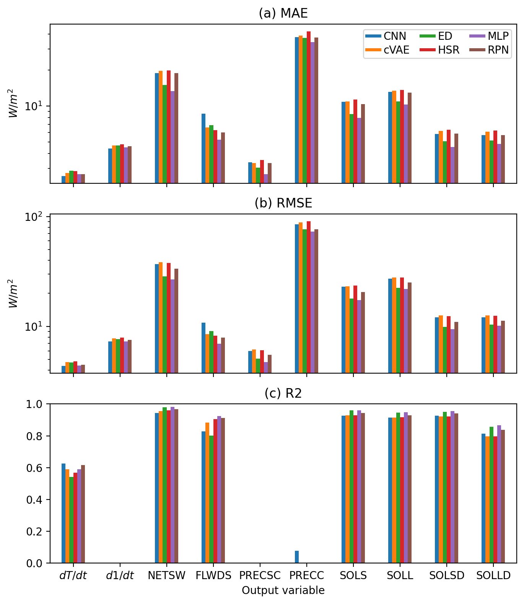
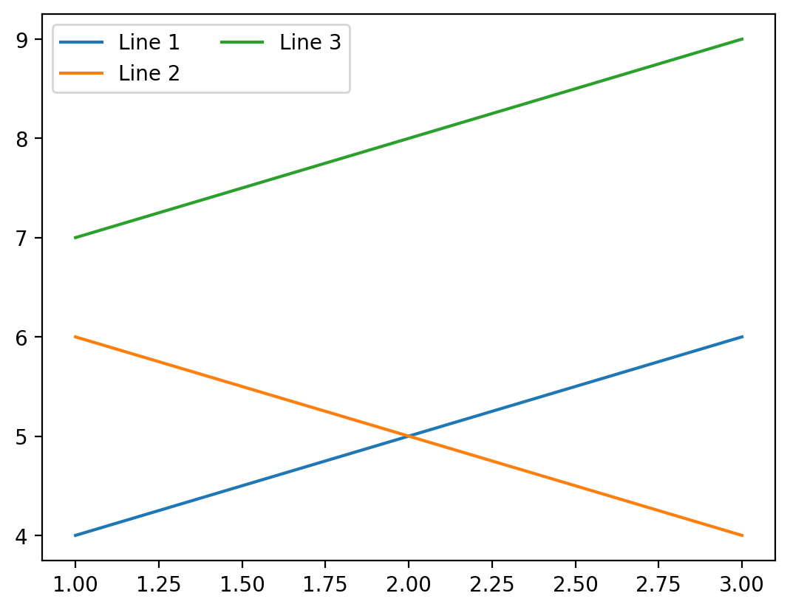

Evaluation metrics#
Import data_utils#
from climsim_utils.data_utils import *
2023-08-21 14:36:29.941637: I tensorflow/core/platform/cpu_feature_guard.cc:182] This TensorFlow binary is optimized to use available CPU instructions in performance-critical operations.
To enable the following instructions: AVX2 FMA, in other operations, rebuild TensorFlow with the appropriate compiler flags.
2023-08-21 14:36:30.922437: W tensorflow/compiler/tf2tensorrt/utils/py_utils.cc:38] TF-TRT Warning: Could not find TensorRT
Instantiate class#
grid_path = '/ocean/projects/atm200007p/jlin96/neurips_proj/ClimSim/grid_info/ClimSim_low-res_grid-info.nc'
norm_path = '/ocean/projects/atm200007p/jlin96/neurips_proj/ClimSim/normalizations/'
grid_info = xr.open_dataset(grid_path)
input_mean = xr.open_dataset(norm_path + 'inputs/input_mean.nc')
input_max = xr.open_dataset(norm_path + 'inputs/input_max.nc')
input_min = xr.open_dataset(norm_path + 'inputs/input_min.nc')
output_scale = xr.open_dataset(norm_path + 'outputs/output_scale.nc')
data = data_utils(grid_info = grid_info,
input_mean = input_mean,
input_max = input_max,
input_min = input_min,
output_scale = output_scale)
Load data and set pressure grid#
# paths to scoring data
input_path = '/ocean/projects/atm200007p/jlin96/neurips_proj/e3sm_train_npy/scoring_input.npy'
target_path = '/ocean/projects/atm200007p/jlin96/neurips_proj/e3sm_train_npy/scoring_target.npy'
# paths to model predictions
cvae_pred_path = '/ocean/projects/atm200007p/shared/neurips_proj/final_metrics/predictions/cVAE/cvae_preds_manual.h5'
ed_pred_path = '/ocean/projects/atm200007p/behrens/ED_Behrens_2022/ED_ClimSIM_1_3_pred.npy'
hsr_pred_path = '/ocean/projects/atm200007p/shared/neurips_proj/final_metrics/predictions/HSR/hsr_preds_bestcrps.h5'
rpn_pred_path = '/ocean/projects/atm200007p/jlin96/neurips_proj/figure_ingredients/rpn_pred_v1_stride6.npy'
cnn_pred_path = '/ocean/projects/atm200007p/jlin96/neurips_proj/figure_ingredients/val_predict_cnn_reshaped_stride6_FINAL.npy'
mlp_pred_path = '/ocean/projects/atm200007p/jlin96/neurips_proj/figure_ingredients/001_backup_phase-7_retrained_models_step2_lot-147_trial_0027.best.h5.npy'
# set variables to V1 subset
data.set_to_v1_vars()
# path to target input
data.input_scoring = np.load(input_path)
# path to target output
data.target_scoring = np.load(target_path)
# set pressure weights
data.set_pressure_grid(input_arr = data.input_scoring)
# load model predictions
data.model_names = ['CNN','cVAE','ED','HSR','MLP', 'RPN']
preds = [data.load_npy_file(load_path = cnn_pred_path),
data.load_h5_file(load_path = cvae_pred_path),
data.load_npy_file(load_path = ed_pred_path),
data.load_h5_file(load_path = hsr_pred_path),
data.load_npy_file(load_path = mlp_pred_path),
data.load_npy_file(load_path = rpn_pred_path)]
data.preds_scoring = dict(zip(data.model_names, preds))
Weight outputs#
Undo output scaling
Weight vertical levels by dp/g
Weight horizontal area of each grid cell by a[x]/mean(a[x])
Convert units to a common energy unit
data.reweight_target(data_split = 'scoring')
data.reweight_preds(data_split = 'scoring')
data.metrics_names = ['MAE', 'RMSE', 'R2']
data.create_metrics_df(data_split = 'scoring')
/ocean/projects/atm200007p/jlin96/neurips_proj/ClimSim/climsim_utils/data_utils.py:649: RuntimeWarning: divide by zero encountered in divide
r_squared = 1 - sq_diff.sum(axis = 0)/tss_time.sum(axis = 0) # sum over time
/ocean/projects/atm200007p/jlin96/neurips_proj/ClimSim/climsim_utils/data_utils.py:649: RuntimeWarning: invalid value encountered in divide
r_squared = 1 - sq_diff.sum(axis = 0)/tss_time.sum(axis = 0) # sum over time
/ocean/projects/atm200007p/jlin96/neurips_proj/ClimSim/climsim_utils/data_utils.py:649: RuntimeWarning: divide by zero encountered in divide
r_squared = 1 - sq_diff.sum(axis = 0)/tss_time.sum(axis = 0) # sum over time
/ocean/projects/atm200007p/jlin96/neurips_proj/ClimSim/climsim_utils/data_utils.py:649: RuntimeWarning: divide by zero encountered in divide
r_squared = 1 - sq_diff.sum(axis = 0)/tss_time.sum(axis = 0) # sum over time
/ocean/projects/atm200007p/jlin96/neurips_proj/ClimSim/climsim_utils/data_utils.py:649: RuntimeWarning: divide by zero encountered in divide
r_squared = 1 - sq_diff.sum(axis = 0)/tss_time.sum(axis = 0) # sum over time
/ocean/projects/atm200007p/jlin96/neurips_proj/ClimSim/climsim_utils/data_utils.py:649: RuntimeWarning: divide by zero encountered in divide
r_squared = 1 - sq_diff.sum(axis = 0)/tss_time.sum(axis = 0) # sum over time
/ocean/projects/atm200007p/jlin96/neurips_proj/ClimSim/climsim_utils/data_utils.py:649: RuntimeWarning: invalid value encountered in divide
r_squared = 1 - sq_diff.sum(axis = 0)/tss_time.sum(axis = 0) # sum over time
/ocean/projects/atm200007p/jlin96/neurips_proj/ClimSim/climsim_utils/data_utils.py:649: RuntimeWarning: divide by zero encountered in divide
r_squared = 1 - sq_diff.sum(axis = 0)/tss_time.sum(axis = 0) # sum over time
Create plots#
%config InlineBackend.figure_format = 'retina'
letters = string.ascii_lowercase
dict_idx = data.metrics_var_scoring
dict_var = data.metrics_idx_scoring
plot_df_byvar = {}
for metric in data.metrics_names:
plot_df_byvar[metric] = pd.DataFrame([dict_idx[model][metric] for model in data.model_names],
index=data.model_names)
plot_df_byvar[metric] = plot_df_byvar[metric].rename(columns = data.var_short_names).transpose()
plot_df_byvar
{'MAE': CNN cVAE ED HSR MLP RPN
variable
$dT/dt$ 2.585418 2.732051 2.864516 2.844789 2.682765 2.685253
$d1/dt$ 4.400639 4.679666 4.673036 4.784426 4.494752 4.592410
NETSW 18.845029 19.729191 14.967681 19.816967 13.360914 18.878685
FLWDS 8.597703 6.588051 6.893821 6.266635 5.224468 6.017693
PRECSC 3.364180 3.321645 3.045900 3.511187 2.683915 3.328444
PRECC 37.825799 38.805963 37.250200 42.379195 34.333065 37.455143
SOLS 10.830984 10.939536 8.553734 11.314418 7.970805 10.355971
SOLL 13.152971 13.461330 10.923703 13.602788 10.299178 12.955313
SOLSD 5.816831 6.158717 5.074686 6.330680 4.533141 5.845594
SOLLD 5.678992 6.065650 5.136236 6.214983 4.806307 5.701871,
'RMSE': CNN cVAE ED HSR MLP RPN
variable
$dT/dt$ 4.369106 4.720812 4.696491 4.824681 4.420904 4.481825
$d1/dt$ 7.283705 7.779619 7.642989 7.895550 7.321821 7.518002
NETSW 36.906747 38.364034 28.537017 37.773019 26.707550 33.596484
FLWDS 10.854747 8.529763 9.070148 8.219851 6.968642 7.913915
PRECSC 6.000881 6.182026 5.078154 6.094945 4.733680 5.511482
PRECC 85.311686 88.711142 76.681968 90.640413 72.876357 76.578238
SOLS 22.916411 23.264985 17.998650 23.614026 17.403315 20.606768
SOLL 27.251214 27.812571 22.540191 27.778323 21.954437 25.218968
SOLSD 12.126842 12.639114 9.916940 12.395840 9.420306 10.996472
SOLLD 12.102328 12.624935 10.416563 12.474274 10.118702 11.247108,
'R2': CNN cVAE ED HSR MLP RPN
variable
$dT/dt$ 0.627260 0.589693 0.541714 0.567524 0.588987 0.617206
$d1/dt$ -inf -inf -inf -inf -inf -inf
NETSW 0.943800 0.956531 0.980463 0.959136 0.982684 0.968036
FLWDS 0.827836 0.883237 0.801872 0.904115 0.924299 0.912173
PRECSC NaN -inf -inf -inf NaN -inf
PRECC 0.076930 -0.926289 -17.908577 -68.347502 -38.685671 -67.943146
SOLS 0.927029 0.929375 0.959621 0.928777 0.961380 0.942723
SOLL 0.915685 0.915267 0.945472 0.916143 0.947612 0.928029
SOLSD 0.927229 0.921261 0.950717 0.922621 0.955713 0.939980
SOLLD 0.812537 0.796327 0.857180 0.797273 0.866159 0.836630}
dict_idx
{'CNN': MAE RMSE R2
variable
ptend_t 2.585418 4.369106 0.62726
ptend_q0001 4.400639 7.283705 -inf
cam_out_NETSW 18.845029 36.906747 0.9438
cam_out_FLWDS 8.597703 10.854747 0.827836
cam_out_PRECSC 3.36418 6.000881 NaN
cam_out_PRECC 37.825799 85.311686 0.07693
cam_out_SOLS 10.830984 22.916411 0.927029
cam_out_SOLL 13.152971 27.251214 0.915685
cam_out_SOLSD 5.816831 12.126842 0.927229
cam_out_SOLLD 5.678992 12.102328 0.812537,
'cVAE': MAE RMSE R2
variable
ptend_t 2.732051 4.720812 0.589693
ptend_q0001 4.679666 7.779619 -inf
cam_out_NETSW 19.729191 38.364034 0.956531
cam_out_FLWDS 6.588051 8.529763 0.883237
cam_out_PRECSC 3.321645 6.182026 -inf
cam_out_PRECC 38.805963 88.711142 -0.926289
cam_out_SOLS 10.939536 23.264985 0.929375
cam_out_SOLL 13.46133 27.812571 0.915267
cam_out_SOLSD 6.158717 12.639114 0.921261
cam_out_SOLLD 6.06565 12.624935 0.796327,
'HSR': MAE RMSE R2
variable
ptend_t 2.844789 4.824681 0.567524
ptend_q0001 4.784426 7.89555 -inf
cam_out_NETSW 19.816967 37.773019 0.959136
cam_out_FLWDS 6.266635 8.219851 0.904115
cam_out_PRECSC 3.511187 6.094945 -inf
cam_out_PRECC 42.379195 90.640413 -68.347502
cam_out_SOLS 11.314418 23.614026 0.928777
cam_out_SOLL 13.602788 27.778323 0.916143
cam_out_SOLSD 6.33068 12.39584 0.922621
cam_out_SOLLD 6.214983 12.474274 0.797273,
'MLP': MAE RMSE R2
variable
ptend_t 2.682765 4.420904 0.588987
ptend_q0001 4.494752 7.321821 -inf
cam_out_NETSW 13.360914 26.70755 0.982684
cam_out_FLWDS 5.224468 6.968642 0.924299
cam_out_PRECSC 2.683915 4.73368 NaN
cam_out_PRECC 34.333065 72.876357 -38.685671
cam_out_SOLS 7.970805 17.403315 0.96138
cam_out_SOLL 10.299178 21.954437 0.947612
cam_out_SOLSD 4.533141 9.420306 0.955713
cam_out_SOLLD 4.806307 10.118702 0.866159,
'RPN': MAE RMSE R2
variable
ptend_t 2.685253 4.481825 0.617206
ptend_q0001 4.59241 7.518002 -inf
cam_out_NETSW 18.878685 33.596484 0.968036
cam_out_FLWDS 6.017693 7.913915 0.912173
cam_out_PRECSC 3.328444 5.511482 -inf
cam_out_PRECC 37.455143 76.578238 -67.943146
cam_out_SOLS 10.355971 20.606768 0.942723
cam_out_SOLL 12.955313 25.218968 0.928029
cam_out_SOLSD 5.845594 10.996472 0.93998
cam_out_SOLLD 5.701871 11.247108 0.83663,
'ED': MAE RMSE R2
variable
ptend_t 2.864516 4.696491 0.541714
ptend_q0001 4.673036 7.642989 -inf
cam_out_NETSW 14.967681 28.537017 0.980463
cam_out_FLWDS 6.893821 9.070148 0.801872
cam_out_PRECSC 3.0459 5.078154 -inf
cam_out_PRECC 37.2502 76.681968 -17.908577
cam_out_SOLS 8.553734 17.99865 0.959621
cam_out_SOLL 10.923703 22.540191 0.945472
cam_out_SOLSD 5.074686 9.91694 0.950717
cam_out_SOLLD 5.136236 10.416563 0.85718}
Plot 1#
fig, axes = plt.subplots(nrows = len(data.metrics_names), sharex = True)
for i in range(len(data.metrics_names)):
plot_df_byvar[data.metrics_names[i]].plot.bar(
legend = False,
ax = axes[i])
if data.metrics_names[i] != 'R2':
axes[i].set_ylabel('$W/m^2$')
axes[i].set_yscale('log')
else:
axes[i].set_ylim(0,1)
axes[i].set_title(f'({letters[i]}) {data.metrics_names[i]}')
axes[i].set_xlabel('Output variable')
axes[i].set_xticklabels(plot_df_byvar[data.metrics_names[i]].index, \
rotation=0, ha='center')
axes[0].legend(columnspacing = .9,
labelspacing = .3,
handleheight = .07,
handlelength = 1.5,
handletextpad = .2,
borderpad = .2,
ncol = 3,
loc = 'upper right')
fig.set_size_inches(7,8)
fig.tight_layout()

hmm = data.load_npy_file(load_path = '/ocean/projects/atm200007p/behrens/ED_Behrens_2022/ED_ClimSIM_1_3_pred.npy')
hmm.shape
(1681920, 128)
data.target_scoring.shape
(1681920, 128)
import matplotlib
print(matplotlib.__version__)
3.5.2
fig, ax = plt.subplots()
ax.plot([1, 2, 3], [4, 5, 6], label='Line 1')
ax.plot([1, 2, 3], [6, 5, 4], label='Line 2')
ax.plot([1, 2, 3], [7, 8, 9], label='Line 3')
ax.legend()
# set the number of columns in the legend to 2
ax.legend(ncol=2)
# show the plot
plt.show()
